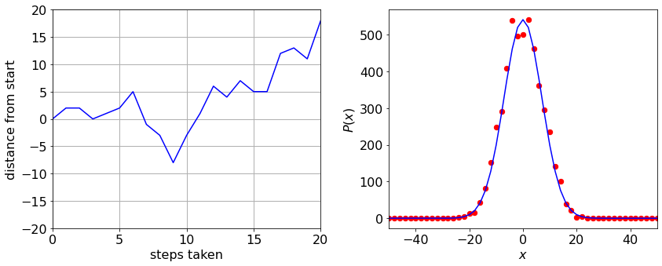
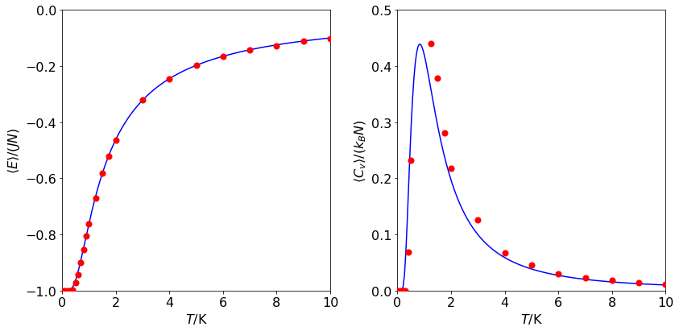
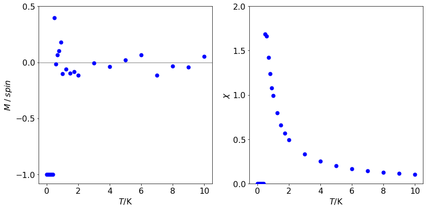
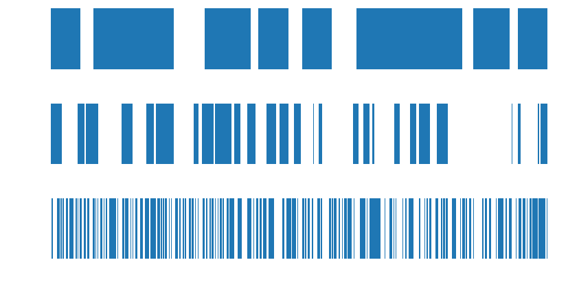
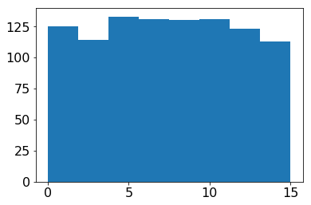
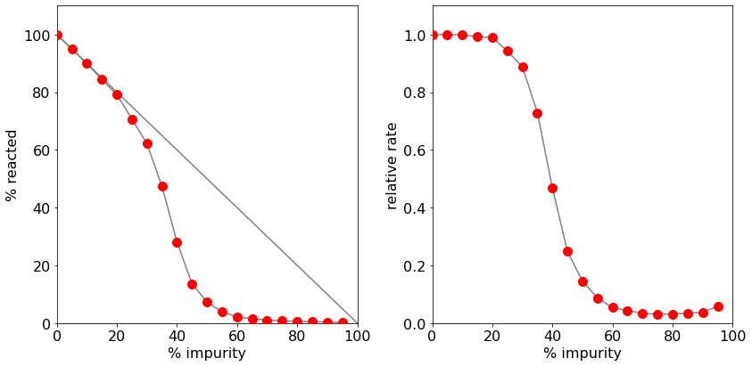
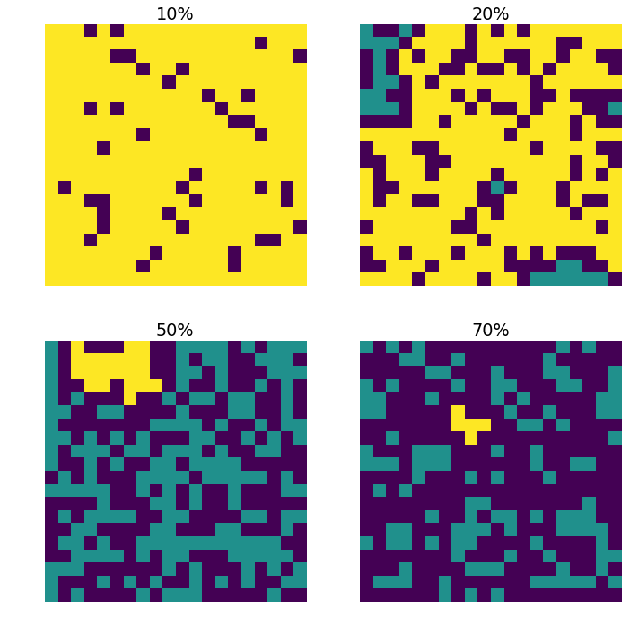
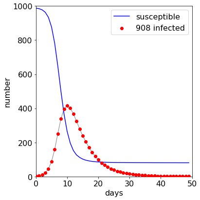
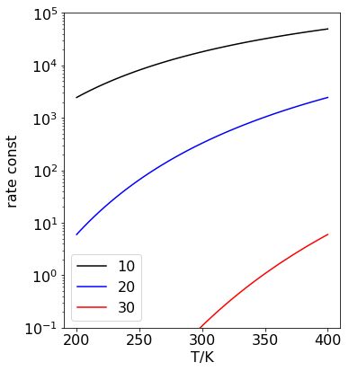

# import all python add-ons etc that will be needed later on
%matplotlib inline
import numpy as np
import matplotlib.pyplot as plt
from sympy import *
from scipy.integrate import quad,odeint,solve_ivp
from scipy import linalg
#from scipy.optimize import fsolve
init_printing() # allows printing of SymPy results in typeset maths format
plt.rcParams.update({'font.size': 16}) # set font size for plots
# algorithm 6. 1D random walk
plt.rcParams.update({'font.size': 16}) # set font size for plots
fig1=plt.figure(figsize=(12,5))
ax0 = fig1.add_subplot(1,2,1)
ax1 = fig1.add_subplot(1,2,2)
n = 501
steps= 50
reps = 5000
prob = np.zeros(n)
xdata= np.zeros(n)
mdata= np.zeros(reps)
c = ( n - 1 )//2
s = 0
for L in range(reps):
m = 0
for j in range(steps):
r = np.random.ranf()
if r < 0.50 :
m = m + 1
else:
m = m - 1
pass
prob[c + m//2] = prob[c + m//2] + 1
s = s + m//2
mdata[L]= s
pass # end of ‘for L ..reps’ forifrom1tondo #xvalues
mdata[0] = 0
for i in range(n):
xdata[i]= (-c + i )*2 # only even x numbers
ax1.plot(xdata, max(prob)*np.exp(-xdata**2/(2*steps) ) ,color='blue')
ax1.scatter(xdata,prob,s=40,color='red',alpha=1)
ax1.set_xlim([-50,50])
ax1.set_xlabel(r'$x$')
ax1.set_ylabel(r'$P(x) $')
ax0.plot(mdata[0:50],color='blue')
ax0.grid(True,linewidth=1)
ax0.set_xlim([0,20])
ax0.set_ylim([-20,20])
ax0.set_xlabel('steps taken')
ax0.set_ylabel('distance from start')
plt.tight_layout()
#plt.savefig('monte-carlo-fig10.png')
plt.show()

# Algorithm 7 least squares and monte carlo calc of decay
def func(x, a, b):
return a * np.exp(-x/b)
events= 200000
bins = 500
maxt = 500.0
tau = 50.0 # ns
fcount= np.zeros(bins,dtype=int)
dtime = np.zeros(bins,dtype=float)
tau_val=np.zeros(events,dtype=float)
for i in range(bins):
dtime[i]= maxt*(i+1/2)/bins
pass
for i in range(events):
p = np.random.ranf() # random 0..1
t = -tau*np.log(p)
indx = int(np.round(bins*t/maxt) )
tau_val[i]=t
if indx < bins:
fcount[indx] = fcount[indx] + 1
pass
p3, pcov = curve_fit( func, dtime, fcount, p0 = [ 5000, 60.0 ] )
fig1=plt.figure(figsize=(12,5))
ax0 = fig1.add_subplot(1,2,1)
ax1 = fig1.add_subplot(1,2,2)
plt.rcParams.update({'font.size': 16}) # set font size for plots
ax1.semilogy( dtime, fcount ,marker='o',linestyle='',markersize=2,color='blue')
ax1.semilogy( dtime, func(dtime,p3[0],p3[1] ), color='red')
ax1.set_ylim([1,1.5*max(fcount)])
ax1.set_xlim([0,maxt])
ax1.set_xlabel('time /ns',fontsize = 16)
ax1.set_ylabel('signal (counts)',fontsize = 16)
ax1.set_ylim([1,1.1e4])
ax0.plot(tau_val,color='black',linewidth=1)
ax0.set_xlim([0,500])
ax0.set_ylim([0,400])
ax0.set_xlabel('Event #')
ax0.set_ylabel('lifetime /ns')
plt.tight_layout()
#plt.savefig('monte-carlo-fig11.png')
plt.show()
---------------------------------------------------------------------------
NameError Traceback (most recent call last)
/var/folders/gn/whk4pp2x4kz_ftg0b1ycmh340000gn/T/ipykernel_75930/1432422823.py in <module>
26 pass
27
---> 28 p3, pcov = curve_fit( func, dtime, fcount, p0 = [ 5000, 60.0 ] )
29
30
NameError: name 'curve_fit' is not defined
# metropolis algorithm 8 harmonic oscillator
#n = 20000 # number of samples
def Hosc(n):
deltax= 0.4 # max displacement
#kB = 1.38e-5 # in kg/nm62/s^2/K 0.1 # initial thermal energy
nm = 1e-9
#T = 300.0
kBT = kB*T
Etot = 0.0 # initial <E>
E2tot = 0.0
xtot=0.0
x2tot=0.0
k = 10.0 # force constant
V = lambda x: 0.5*k* x**2 # potential energy PE # first guess of x
x1= 0.0
E1= V(x1) # first guess of PE
for i in range(n): # start loop step(2)
x2 = x1 + (np.random.ranf()-0.5)*deltax #new x position
E2 = V(x2) # new PE
DeltaE= E2 - E1 # energy difference
# next line is Metropolis part(3) and (4)in algorithm
if DeltaE <= 0.0 or np.exp(-DeltaE/kBT) > np.random.ranf() :
x1= x2 # save new configuration
E1= E2 # save new energy
pass
Etot = Etot + E1 # always add to total
E2tot= E2tot + E1**2 # add to total <E^2>
xtot = xtot + x1
x2tot = x2tot +x1**2
pass
Eav = nm**2*Etot/n; # average step (5)
E2av= nm**4*E2tot/n;
stdev= np.sqrt( (E2av - Eav**2)/(n-1) );
CV= (E2av-Eav**2)/(kB*T**2)/nm**2
xav = nm*xtot/n
x2av= nm**2*x2tot/n
return Eav,E2av,stdev,CV,xav,x2av
kB = 1.38e-5 # in kg/nm62/s^2/K 0.1 # initial thermal energy
T = 300.0
print(kB*T)
maxn= 100000
nlist =[100,200,500,1000,2000,5000,10000,20000,50000,100000]
Eval=[0 for i in range(len(nlist))]
Sdval=[0 for i in range(len(nlist))]
mval=[0 for i in range(len(nlist))]
for k, m0 in enumerate(nlist):
m = int(np.round(maxn/m0)+1 )
print('k,m,m0',k, m,m0)
valE=0
valSD=0.0
for i in range(m):
Eav, E2av, stdev, CV,temp,temp = Hosc( m0 )
#print('i,m E sd', i,n, m, Eav*1e21, stdev*1e21 )
valE = valE + Eav*1e21
valSD= valSD + stdev*1e21
print( m, m0, valE/m, valSD/m )
Eval[k]=valE/m
Sdval[k]=valSD/m
mval[k]=m0
print('finished')
0.00414
k,m,m0 0 1001 100
1001 100 1.9245684133516152 0.25083273084856744
k,m,m0 1 501 200
501 200 1.9798307697572926 0.18909745695978258
k,m,m0 2 201 500
201 500 2.0589269745151566 0.12762771212231902
k,m,m0 3 101 1000
101 1000 2.0729673386936702 0.0913310224706445
k,m,m0 4 51 2000
51 2000 1.9926439008160188 0.06246359715425317
k,m,m0 5 21 5000
21 5000 2.081317166186314 0.04191290731201401
k,m,m0 6 11 10000
11 10000 2.086226557555868 0.029787263909476
k,m,m0 7 6 20000
6 20000 2.068029418046985 0.02057713438197518
k,m,m0 8 3 50000
3 50000 2.045369055375889 0.013035026000249342
k,m,m0 9 2 100000
2 100000 2.0866917140214385 0.00928955927009217
finished
fig1= plt.figure(figsize=(6,6))
plt.rcParams.update({'font.size': 16}) # set font size for plots
kk=1.38e-2*T/2
print(mval)
xm=np.logspace(1,5,200)
plt.plot(xm[:],1.38e-2*T/2+2.5/np.sqrt(xm[:]),color='grey')
plt.plot(xm[:],1.38e-2*T/2-2.5/np.sqrt(xm[:]),color='grey')
plt.scatter(mval[:],[kk+ Sdval[i] for i in range(len(Eval) ) ],s=50,color='red',zorder=10)
plt.scatter(mval[:],[kk -Sdval[i] for i in range(len(Eval) ) ],s=50,color='red',zorder=10)
#plt.plot(),color='red' )
plt.axhline(1.38e-23*1e21*T/2,color='grey',linewidth=1)
plt.xscale('log')
plt.ylim([1,3])
plt.xlim([10,1e5])
plt.xlabel(r'$N$')
plt.ylabel(r'$\langle E\rangle \pm \sigma \times 10^{21}$'+ ' J')
plt.yticks( [1,1.5,2,2.5,3] )
plt.tight_layout()
#plt.savefig('monte-carlo-fig12a.png')
plt.show()
[100, 200, 500, 1000, 2000, 5000, 10000, 20000, 50000, 100000]
# single value k=10
kB = 1.38e-5 # in kg/nm62/s^2/K 0.1 # initial thermal energy
T = 300.0
k=10
nm=1e-9
print(kB*T)
maxn=200000
Eav, E2av, stdev, CV,xav,x2av = Hosc( maxn )
print(Eav,E2av,stdev,CV,xav/nm,x2av/nm**2)
print(kB*T/k)
0.00414
2.075463568522853e-21 1.2813927074287654e-41 6.521664121267267e-24 6.848935628037069e-24 8.153931377652013e-05 0.000415092713704592
0.000414
# kinetic energy metropolis from Maple
fig1= plt.figure(figsize=(6,6))
N = 1000 # number of samples
fs= np.zeros(N,dtype=float) # Maxwell probability f(s)
fx= np.zeros(N,dtype=float) # x value
deltax= 5000.0 # max speed m /s
kB = 1.381e-23 # Boltzmann?s const J/K
T = 300.0 # temperature K
kBT= kB*T
amu= 1.6604e-27 # atomic mass unit kg
m = 14.0*amu # N2 mass in kg
Etot = 0.0 # initial energy <E> J
E2tot= 0.0 # initial <E2>
Xtot = 0.0 # initial value of total x
X2tot= 0.0 # initial value of total x2
V= lambda x: 0.5*m*x**2 # kinetic energy
x1 = 1e-3 # first guess of x
E1 = V(x1) # first guess of PE
jj = 0 # initial index Ps & Px
Pi = np.pi
g = 4*Pi*(m/(2.0*Pi*kBT))**(3.0/2.0) # weighting for fs.
for i in range(N): # start loop step (2)
x2 = x1 + (np.random.ranf() - 0.5)*deltax # new x position
E2 = V(x2) # new PE
DeltaE= E2 - E1 # energy difference
# next line is Metropolis sampling
if (DeltaE <= 0.0) or ((x2/x1)**2*np.exp(-DeltaE/kBT) > np.random.ranf()) :
x1= x2 # save new config'n
E1= E2 # save new energy
fs[jj]= g*np.exp(-E1/kBT)*x1**2 # Maxwell probability
fx[jj]= np.abs(x1) # make abs as only positive has any meaning physically
jj= jj + 1
pass
Etot= Etot + E1 # always add to total
E2tot= E2tot + E1**2 # add to total <E2>
Xtot= Xtot + x1 # add to total <X>
X2tot= X2tot + x1**2 # add to total <X2>
pass # end loop
Eav = Etot/N # average step (5)
E2av = E2tot/N
Estdev = np.sqrt((E2av - Eav**2)/(N-1))
CV = (E2av - Eav**2)/(kB*T**2)
print('{:s}\n{:12.4g}{:12.4g}{:12.4g}{:12.4g} '.\
format( 'av(E), av(E^2), stdev(E), CV', Eav, E2av, Estdev, CV))
Xav = Xtot/N
X2av= X2tot/N
rt_mean_sqrX2 = np.sqrt(X2av)
Xstdev= np.sqrt((X2av-Xav**2)/(N-1))
print('\n{:s}\n{:12.4g}{:12.4g}{:12.4g}{:12.4g}'.\
format( 'av(X), av(X^2), rms(x^2), stdev(X)', Xav, X2av, rt_mean_sqrX2, Xstdev ))
xx = np.linspace(0, deltax,int(deltax))
plt.plot( g*np.exp( -V(xx)/kBT )*xx**2,color ='grey',linewidth=10,alpha=0.4)
mx= np.max(fs)
plt.scatter(fx[0:jj],fs[0:jj],color='red',s=3)
plt.xlabel(r'$velocity\; v $'+'/ (m/s)',fontsize=16)
plt.ylabel(r'$f(v,v+dv)$',fontsize=16)
plt.ylim( [0.0, mx*1.05] )
plt.xlim( [0, deltax/2.0] )
plt.yticks([0,0.0005,0.001,0.0015])
plt.tight_layout()
#plt.savefig('monte-carlo-fig12b.png')
plt.show()
av(E), av(E^2), stdev(E), CV
5.96e-21 7.121e-41 1.89e-22 2.871e-23
av(X), av(X^2), rms(x^2), stdev(X)
48.21 5.128e+05 716.1 22.61
# 1d Ising
def binomialCoeff(n, k): # from Rosetta
r = 1
for i in range(1, k+1):
r = r * (n - i + 1) / i
return r
#-------------
def get_entropy(spin):
p = 1 # start at 1 to get groups
for i in range(L - 1):
if spin[i+1] != spin[i] :
p = p + 1
pass
pass
#print(" entropy/(kB*N) ", np.log( binomialCoeff(N,p) ) /L )
return np.log( binomialCoeff(L,p) ) /L
#-----------------------
def Ising1D(beta):
#L # L sites
#N # calcs / site
#J # positive J is ferromagnet
#kB # Boltzmann const, in a.u.
#T # temperature
# beta = J/kBT
rndi = np.random.randint(L,size = N) # make list of random numbers 0 to n used as indices
spin= np.zeros(L,dtype=int)
# deltaE can take values ( -4, 0, 4), however, only the
# positive value is used in the metropolis test, hence we define
# probability P for the Metropolis test outside the loop.
P = np.exp(-4.0*beta) # prob’lty in Metropolis test.
for i in range(L):
spin[i] = -1 # initial distribution
Enrg = -J*L # all spins aligned initially
tot_Enrg = 0.0
tot_Enrg2= 0.0
tot_Mag = 0.0
tot_Mag2=0.0
for num in range(N):
i = rndi[num]
indx1 = i + 1
if indx1 > L-1 : indx1 = 0 # wrap around ends
indx2 = i - 1
if indx2 < 0 : indx2 = L - 1
DeltaE = 2.0*J*spin[i]*(spin[indx1] + spin[indx2]) # energy of spin i + energy of adjacent spins
if DeltaE <= 0.0 or np.random.ranf() < P : # Metropolis test
spin[i] = -spin[i] # flip spin
Enrg = Enrg + DeltaE # add energy
tot_Enrg = tot_Enrg + Enrg
tot_Enrg2= tot_Enrg2 + Enrg**2
#tot_Mag = tot_Mag+np.sum(spin)
#tot_mag2 = tot_Mag2+np.dot(spin,spin)
pass
return tot_Enrg, tot_Enrg2, tot_Mag,tot_Mag2,spin
#------------
L = 500 # L sites
reps = 5000 # repeats
N = L*reps # reps calcs / site
J = 1.0 # positive J is ferromagnet
kB= 1.0 # Boltzmann const, in a.u.
T = 2.0 # temperature
T_vals=[0.01,0.1,0.2,0.3,0.4,0.5,0.6,0.7,0.8,0.9,1.0,1.25, 1.5,1.75, 2,3,4,5,6,7,8,9,10]
m=len(T_vals)
CV=np.zeros(m)
En=np.zeros(m)
S=np.zeros(m)
Mag=np.zeros(m)
Mag2=np.zeros(m)
chi=np.zeros(m)
for i,T in enumerate(T_vals):
beta = J/(kB*T)
tot_Enrg, tot_Enrg2,tot_M,tot_M2, spin = Ising1D(beta)
avE = (tot_Enrg/N) # total N events
avE2 = (tot_Enrg2/N)
#print('temperature',T,'<Energy>',avE/L)
#print('<Energy squared>',avE2)
Cv = (1.0/(L*kB*T**2))*( tot_Enrg2/N - (tot_Enrg/N)**2 ) # <E^2> - <E>^2
print(i,T,'Cv',Cv/kB)
CV[i] = Cv/kB
En[i] = avE/L
S[i] = get_entropy(spin)
Mag[i]= np.sum(spin)
Mag2[i]= np.dot(spin,spin)
chi[i]= (Mag2[i]/L-(Mag[i]/L)**2)/(kB*T)
pass
0 0.01 Cv 0.0
1 0.1 Cv 0.0
2 0.2 Cv 0.0
3 0.3 Cv 0.0001433021964557055
4 0.4 Cv 0.07783279860523179
5 0.5 Cv 0.27587842964893206
6 0.6 Cv 0.3554225572465738
7 0.7 Cv 0.4139753817935826
8 0.8 Cv 0.4280659602626655
9 0.9 Cv 0.4252122781984652
10 1.0 Cv 0.4504099549581297
11 1.25 Cv 0.37147057406712325
12 1.5 Cv 0.2955923105198243
13 1.75 Cv 0.24774946070747564
14 2 Cv 0.20212213844956206
15 3 Cv 0.10249351786099013
16 4 Cv 0.05943567605841872
17 5 Cv 0.038875605258247965
18 6 Cv 0.02720419997786323
19 7 Cv 0.02030162940079713
20 8 Cv 0.015590271993532738
21 9 Cv 0.012299302787779376
22 10 Cv 0.009879219974618929
fig1=plt.figure(figsize=(12,6))
ax0 = fig1.add_subplot(1,2,1)
ax1 = fig1.add_subplot(1,2,2)
plt.rcParams.update({'font.size': 16}) # set font size for plots
ax0.scatter(T_vals,En,s=50,color='red',zorder=10)
x = np.linspace(1e-2,10,200)
En_exact = lambda T: -J*np.tanh(J/(kB*T)) # exact energy
ax0.plot(x,En_exact(x),color='blue')
ax0.set_ylim([-1,0])
ax0.set_xlim([0,T_vals[m-1]])
ax0.set_xlabel(r'$T$'+'/K')
ax0.set_ylabel(r'$\langle E\rangle /(JN)$')
ax1.scatter(T_vals,CV,s=50,color='red',zorder=10)
CV_exact= lambda T: kB*(((2*J)/(kB*T)) * 1/ (np.exp(J/(kB*T)) + np.exp(-J/(kB*T)) ) )**2
ax1.plot(x,CV_exact(x)/kB,color='blue')
ax1.set_ylim([0,0.5])
ax1.set_xlim([0,T_vals[m-1]])
ax1.set_xlabel(r'$T$'+'/K')
ax1.set_ylabel(r'$\langle C_v\rangle /(k_BN)$')
plt.tight_layout()
#plt.savefig('monte-carlo-fig12f.png')
plt.show()

fig1=plt.figure(figsize=(12,6))
ax0 = fig1.add_subplot(1,2,1)
ax1 = fig1.add_subplot(1,2,2)
plt.rcParams.update({'font.size': 16}) # set font size for plots
ax0.scatter(T_vals,Mag/L,color='blue',s=50,zorder=10)
ax0.axhline(0,color='grey',linewidth=1)
ax0.set_ylabel(r'$M \;/ \;spin$')
ax0.set_xlabel(r'$T$'+'/K')
ax0.set_yticks([-1,-0.5,0.0,0.5])
ax1.scatter(T_vals,chi,color='blue',s=50,zorder=10)
ax1.set_ylabel(r'$\chi$')
ax1.set_xlabel(r'$T$'+'/K')
ax1.set_ylim([0,2])
ax1.set_yticks([0,0.5,1.0,1.5,2])
plt.tight_layout()
#plt.savefig('monte-carlo-fig12i.png')
plt.show()

fig1=plt.figure(figsize=(6,6))
plt.rcParams.update({'font.size': 16}) # set font size for plots
J=1
Ent = lambda T : kB*np.log(np.exp(2*J/(kB*T))+1 )- 2*J*np.exp(2*J/(kB*T))/(T*(np.exp(2*J/(kB*T))+1 ) )
x = np.linspace(1e-2,10,200)
plt.plot(x,Ent(x),color='blue')
J=5
plt.plot(x,Ent(x),color='blue')
plt.scatter(T_vals,S,s=50,color='red')
plt.axhline(kB*np.log(2),color='grey',linewidth=1)
plt.ylim([0,0.75])
plt.xlim([0,T_vals[m-1]])
plt.xlabel(r'$T$'+'/K')
plt.ylabel(r'$\langle S\rangle /(k_BN)$')
plt.annotate(r'$J=1$',xy=(3,0.6))
plt.annotate(r'$J=5$',xy=(6,0.4))
plt.tight_layout()
#plt.savefig('monte-carlo-fig12h.png')
plt.show()
/Users/godfrey/.pyenv/versions/3.6.5/lib/python3.6/site-packages/ipykernel_launcher.py:4: RuntimeWarning: overflow encountered in exp
after removing the cwd from sys.path.
/Users/godfrey/.pyenv/versions/3.6.5/lib/python3.6/site-packages/ipykernel_launcher.py:4: RuntimeWarning: invalid value encountered in true_divide
after removing the cwd from sys.path.
fig1=plt.figure(figsize=(12,6))
ax0 = fig1.add_subplot(3,1,1)
ax1 = fig1.add_subplot(3,1,2)
ax2 = fig1.add_subplot(3,1,3)
L = 500 # L sites
reps = 500 # repeats
N = L*reps # reps calcs / site
J = 1.0 # positive J is ferromagnet
kB= 1.0 # Boltzmann const, in a.u.
T = 10.0 # temperature
def plot_it(ax,T):
beta = J/(kB*T)
tot_Enrg, tot_Enrg2,spin = Ising1d(beta)
for i in range(L):
if spin[i] > 0: spin[i]=0
#print(spin[0:100])
z= np.arange(L)
ax.bar(z,spin,align='center',width=1.0)
ax.axis('off')
ax=[ax0,ax1,ax2]
for i,T in enumerate( [0.5,1,10] ):
plot_it(ax[i],T)
plt.tight_layout()
#plt.savefig('monte-carlo-fig12g.png')
plt.show()

# metropolos 2D ising spins
def ising2d(beta):
rndi = np.random.randint(L,size = N) # make list of random numbers 0 to L-1 used as indices
rndk = np.random.randint(L,size = N)
spin = np.zeros((L,L),dtype=int) # spinlattice
prob = np.zeros(8,dtype=float) # array for exp(-deltaE/kBT)
# 2*( -4,-2, 0, 2, 4) only positive used, 0 is checked for
prob[3] = np.exp(-4.0*beta) # all rest not used so are zero
prob[7] = np.exp(-8.0*beta)
for i in range(L):
for k in range(L):
spin[i,k]= 1 # initial distribution T = 0
pass
Enrg = -2.0*n # energy when all spins are +1
tot_Enrg = 0.0
tot_Enrg2 = 0.0
M = 0
mag=0
for num in range(N): # start calc
i = rndi[num]
k = rndk[num] # choose random indices from list
indx1 = i + 1 # get adjacent site on right
if indx1 > L - 1: indx1 = 0 # if right boundary go to left-most
indx2 = i - 1 # adjacent left
if indx2 < 0: indx2 = L - 1 # if left boundary go to right-most
indx3 = k + 1 # adjacent above
if indx3 > L - 1: indx3 = 0 # if top go to bottom
indx4 = k - 1 # adjacent below
if indx4 < 0: indx4 = L - 1 # if bottom go to top
sum_nn = spin[indx1,k] + spin[indx2,k] + spin[i,indx3] + spin[i,indx4]
DeltaE = 2*spin[i,k]*sum_nn # # -2*old value*( -J )*neigbours
if DeltaE <= 0 or np.random.ranf() < prob[DeltaE-1] : # Metropolis test
spin[i,k]= -spin[i,k] # flip spin
Enrg = Enrg + DeltaE # increment
#mag = mag +2*spin[i,k]
pass
tot_Enrg = tot_Enrg + Enrg # energy
tot_Enrg2= tot_Enrg2 + Enrg**2 # energy2
if num > N-10000:
M = M + (np.sum(spin))
pass
return tot_Enrg, tot_Enrg2, M,spin
L = 16 # side
n = L**2
N = n*25*10**3 # integer use 10**3 for pics
J = 1.0
kB = 1.0
print(L,n,N,J,kB)
#T = np.linspace(0,5,num,dtype=float)
T = [0.1,0.25,0.5,0.75,1,1.25,1.5,1.75,2,2.1,2.2,2.3,2.4,2.5,2.6,2.7,2.8,2.9,3,3.25,3.5,3.75,4,4.25,4.5,4.75,5]
num = len(T)
CV=np.zeros(num,dtype=float)
Mag=np.zeros(num,dtype=float)
for i in range(1,num):
beta = J/( kB*T[i] )
tot_E,tot_E2,tot_M,spin = ising2d(beta)
Cv = beta**2*( tot_E2/N - tot_E**2/N**2)/n
print('{:f} {:f} {:f} {:f} {:f}'.format( T[i],tot_E/(N*n),tot_E2/(N*n),Cv,np.abs(tot_M /(10000*n) ) ))
CV[i]= Cv
Mag[i]= np.abs(tot_M/(10000*n))
pass
print('finished')
16 256 6400000 1.0 1.0
0.250000 -2.000000 1024.000000 0.000000 0.999900
0.500000 -2.000000 1024.000000 0.000000 0.999900
0.750000 -1.999809 1023.806195 0.002731 0.999900
1.000000 -1.997186 1021.143847 0.023110 0.999422
1.250000 -1.985138 1008.965821 0.081857 0.995414
1.500000 -1.951156 975.034619 0.195403 0.989938
1.750000 -1.880038 906.038976 0.390658 0.972724
2.000000 -1.745599 782.894625 0.708346 0.911566
2.100000 -1.668262 716.690953 0.956496 0.907791
2.200000 -1.556203 625.790091 1.202028 0.889702
2.300000 -1.399931 509.784102 1.526169 0.753805
2.400000 -1.249901 407.522424 1.316983 0.572862
2.500000 -1.125476 330.746331 1.035572 0.281209
2.600000 -1.043712 284.349446 0.810622 0.249187
2.700000 -0.968242 244.597914 0.630973 0.250601
2.800000 -0.910506 216.465204 0.540251 0.081128
2.900000 -0.862200 194.209262 0.463947 0.127812
3.000000 -0.816766 174.415201 0.403979 0.020039
3.250000 -0.728375 139.079873 0.309022 0.065845
3.500000 -0.660135 114.591072 0.247496 0.010335
3.750000 -0.603157 95.996338 0.203651 0.035710
4.000000 -0.556983 82.161969 0.171435 0.020998
4.250000 -0.518162 71.370878 0.145993 0.001098
4.500000 -0.483053 62.330652 0.128170 0.053399
4.750000 -0.454658 55.436734 0.111604 0.006944
5.000000 -0.427928 49.337055 0.098306 0.045870
finished
fig1=plt.figure(figsize=(12,6))
ax0 = fig1.add_subplot(1,2,1)
ax1 = fig1.add_subplot(1,2,2)
plt.rcParams.update({'font.size': 16}) # set font size for plots
ax0.plot(T,CV,color='grey')
ax0.scatter(T,CV,color='red',s=50)
ax0.set_xlim([0,5])
ax0.set_ylim([0,2])
ax0.set_xlabel(r'$k_BT$')
ax0.set_ylabel(r'$C_V$')
ax0.set_yticks([0,0.5,1,1.5,2])
M = lambda beta : (1.0 - np.sinh(2/beta)**(-4) )**(1/8)
Tc = 2.0/np.log(1+np.sqrt(2)) - 1e-12
beta = np.linspace(1e-3,Tc,1000)
ax1.plot(beta,M(beta) ,color='blue')
Mag[0]=Mag[1]
ax1.scatter(T,Mag,color='red',s=50)
ax1.set_ylim([0,1])
ax1.set_xlim([0,5])
ax1.set_xlabel(r'$k_BT$')
ax1.set_ylabel(r'$M$')
plt.tight_layout()
#plt.savefig('monte-carlo-fig14.png')
plt.show()
/Users/godfrey/.pyenv/versions/3.6.5/lib/python3.6/site-packages/ipykernel_launcher.py:15: RuntimeWarning: overflow encountered in sinh
from ipykernel import kernelapp as app
fig1=plt.figure(figsize=(10,5))
ax0 = fig1.add_subplot(1,2,1)
ax1 = fig1.add_subplot(1,2,2)
plt.rcParams.update({'font.size': 16})
colm = plt.cm.viridis
L = 16 # side
n = L**2
N = n*25*10**1 # integer
J = 1.0
kB = 1.0
T=2
beta = J/(kB*T)
tot_E, tot_E2, tot_M, spin = ising2d(beta)
ax0.imshow(spin, aspect=1, cmap=colm,interpolation='none',origin='lower')
ax0.axis('off')
T=3
beta = J/(kB*T)
tot_E, tot_E2, tot_M, spin = ising2d(beta)
aa=ax1.imshow(spin, aspect=1, cmap=colm,interpolation='none',origin='lower')
ax1.axis('off')
plt.tight_layout()
#plt.savefig('monte-carlo-fig12.png')
plt.show()
plt.hist(np.random.randint(L,size=1000),bins=8 )
plt.show()

M = lambda beta : (1.0 - np.sinh(2/beta)**(-4) )**(1/8)
Tc = 2.0/np.log(1+np.sqrt(2))-1e-15
beta = np.linspace(0,Tc,1000)
plt.plot(beta,M(beta) ,color='blue')
plt.scatter(T,Mag,color='red',s=50)
plt.ylim([0,1])
plt.xlim([0,5])
plt.show()
/Users/godfrey/.pyenv/versions/3.6.5/lib/python3.6/site-packages/ipykernel_launcher.py:1: RuntimeWarning: divide by zero encountered in true_divide
"""Entry point for launching an IPython kernel.
/Users/godfrey/.pyenv/versions/3.6.5/lib/python3.6/site-packages/ipykernel_launcher.py:1: RuntimeWarning: overflow encountered in sinh
"""Entry point for launching an IPython kernel.
np.linspace(0,5,21,dtype=float)
array([0. , 0.25, 0.5 , 0.75, 1. , 1.25, 1.5 , 1.75, 2. , 2.25, 2.5 ,
2.75, 3. , 3.25, 3.5 , 3.75, 4. , 4.25, 4.5 , 4.75, 5. ])
N = n*25*10**1
kBT=2
beta =J/kBT
energy, energy2, CV,magn= ising2d(beta)
print('{:f} {:f} {:f} {:f} {:f}'.format( kBT,energy,energy2,CV,magn) )
---------------------------------------------------------------------------
TypeError Traceback (most recent call last)
<ipython-input-409-876763949295> in <module>()
4 energy, energy2, CV,magn= ising2d(beta)
5
----> 6 print('{:f} {:f} {:f} {:f} {:f}'.format( kBT,energy,energy2,CV,magn) )
TypeError: unsupported format string passed to numpy.ndarray.__format__
for i,val in enumerate([-8,-4,0,4,8] ):
print(i,val)
L//2-1
7
np.random.randint(1,5,size = 100)
array([2, 4, 3, 2, 2, 3, 3, 1, 4, 2, 2, 3, 1, 2, 3, 2, 4, 1, 4, 3, 1, 4,
4, 4, 2, 3, 2, 1, 3, 4, 4, 2, 4, 3, 4, 1, 4, 4, 4, 2, 3, 3, 4, 2,
3, 3, 1, 2, 2, 3, 2, 4, 1, 1, 1, 2, 2, 3, 2, 2, 3, 3, 4, 1, 3, 1,
2, 1, 4, 3, 3, 1, 2, 4, 4, 4, 2, 1, 4, 3, 4, 4, 2, 3, 3, 3, 4, 4,
4, 2, 1, 2, 3, 1, 3, 4, 2, 2, 1, 4])
# algorithm 10 Forster transfer
kf= 1/10.0 # 10 ns lifetime
c = 0.002 # conc mol/dm3
R0= 3.0 # R0 in nm
d = 8.0 # sphere radius d*R0
Avog= 6.023e23/1e24 # num molecs / nm3
n = int(np.round( c*Avog*4/3*np.pi*(d*R0)**3) ) # integer number molecs
Rmax= (2/3)*kf*(R0/1)**6 # maximum rate
reps= 20000 # repeat calc’n
bins= 150 # size of histogram
maxt= 50.0 # maximum time
Acount= np.zeros(bins,dtype=int) # define arrays
dtime = np.zeros(bins,dtype=float)
print(n,Rmax)
for i in range(bins):
dtime[i]= i*maxt/bins
s = 0.6667*kf/d**6 # constants for rate
for k in range( reps): # start calc loop
a0 = kf # fluorescence rate
for i in range(n):
x = np.random.ranf() - 0.5 # choose acceptors
y = np.random.ranf() - 0.5 # x,y,z coordinates
z = np.random.ranf() - 0.5
rate = s/(x**2 + y**2 + z**2)**3 # 2/3*kf*(R0/R)**6
if rate > Rmax : rate = Rmax
a0 = a0 + rate # sum rate
pass
t = -np.log( np.random.ranf() )/a0 # calc time eqn (12.11)
indx = int(np.round(t*bins/maxt) ) # make index
if indx < bins-1 :
Acount[indx]= Acount[indx] + 1 # histogram
pass
pass # end reps loop
fig1= plt.figure(figsize=(6,6))
plt.plot(dtime,Acount,color='grey')
plt.scatter(dtime,Acount,s=20,color='red')
plt.yscale('log')
plt.ylabel(r'$counts$')
plt.xlabel(r'$time $'+' /ns')
plt.ylim([1,1.3*max(Acount)])
alpha = 1.25
a = max(Acount)*0.65
ket= lambda t, a, alpha: a*np.exp(-kf*t-alpha*np.sqrt(kf*t))
#p3, pcov = curve_fit( ket, dtime, Acount, p0 = [ max(Acount), 1.5 ] )
print(a,alpha)
plt.plot(dtime,ket(dtime,a,alpha),color='blue' )
plt.tight_layout()
#plt.savefig('monte-carlo-fig16.png')
plt.show()
1522.3 1.25
# P[,]>= 1 = A molecs, 2 = B molecs, 0 = impurity.
n = 20 #size of grid side
reps = 100 #repeat calc’n
fract= 0.0 #initial fraction impurity
num_fract = 20 #number of fractions calc’d
delta_fract= 0.05 #increment fraction
data = np.zeros(num_fract,dtype=float) #array for results
fdata= np.zeros(num_fract,dtype=float) # fractions
Mat = np.zeros((n+2,n+2,4),dtype=int) # n+2 values, index runs from 0->n+1
for L in range(num_fract): # fraction loop to end
asum = 0
for k in range(reps): # repeat loop
P = np.zeros((n+2,n+2),dtype = int) #matrix of molecs/ trees
for i in range(1,n+1) :
for j in range(1,n+1):
P[i,j]= 1 # fill matrix leave border could
pass
pass
fn = int(np.trunc(fract*n*n) ) # make into integer
# part b make fraction of impurities
num = 0
while num < fn : #exactly fract impurity
ra = np.random.randint(1,n+1)
rb = np.random.randint(1,n+1)
if P[ra,rb] != 0:
P[ra,rb] = 0
num = num + 1
pass
pass
num = 0
# choose one type B molecule
while num < 1 :
ra = np.random.randint(1,n+1) # in range 1 to n+1
rb = np.random.randint(1,n+1)
if P[ra,rb] == 1 :
P[ra,rb] = 2
num = 1
pass
pass
# part c main calculation starts ###
b = -1
c = 0
while c > b : # check if calc ended
b = c # store old value in b
c = 0 # reset c
for i in range(1,n+1):
for j in range(1,n+1):
if P[i,j] == 2 : # search array
if P[i,j-1] == 1 : P[i,j-1] = 2
if P[i,j+1] == 1 : P[i,j+1] = 2
if P[i-1,j] == 1 : P[i-1,j] = 2
if P[i+1,j] == 1 : P[i+1,j] = 2
c = c + 1
pass
pass # end while
asum = asum + c
pass # end reps
# make results
av = asum/reps
fdata[L] = fract*100
data[L] = av/n**2*100.0
fract = fract + delta_fract
print('results',L, fdata[L],data[L])
if np.round(fdata[L])== 10: Mat[:,:,0]=P[:,:]
if np.round(fdata[L])== 30: Mat[:,:,1]=P[:,:]
if np.round(fdata[L])== 50: Mat[:,:,2]=P[:,:]
if np.round(fdata[L])== 70: Mat[:,:,3]=P[:,:]
pass # end L loop
print('finished')
print(fdata)
print(data)
results 0 0.0 100.0
results 1 5.0 95.0
results 2 10.0 89.965
results 3 15.000000000000002 84.76
results 4 20.0 79.4975
results 5 25.0 71.17
results 6 30.0 62.1075
results 7 35.0 46.795
results 8 40.0 29.81
results 9 44.99999999999999 11.7875
results 10 49.99999999999999 8.05
results 11 54.99999999999999 3.085
results 12 60.0 2.15
results 13 65.0 1.7575
results 14 70.0 0.9924999999999999
results 15 75.00000000000001 0.77
results 16 80.00000000000001 0.645
results 17 85.00000000000001 0.5025
results 18 90.00000000000003 0.3325
results 19 95.00000000000003 0.31
finished
[ 0. 5. 10. 15. 20. 25. 30. 35. 40. 45. 50. 55. 60. 65. 70. 75. 80. 85.
90. 95.]
[100. 95. 89.965 84.76 79.4975 71.17 62.1075 46.795
29.81 11.7875 8.05 3.085 2.15 1.7575 0.9925 0.77
0.645 0.5025 0.3325 0.31 ]
fig1= plt.figure(figsize=(12,6))
ax0 = fig1.add_subplot(1,2,1)
ax1 = fig1.add_subplot(1,2,2)
plt.rcParams.update({'font.size': 16})
ax0.scatter(fdata,data,s=100,color='red',zorder=10)
ax0.plot(fdata,data,color='grey',zorder=0)
ax0.plot([0,100],[100,0],color='grey')
ax0.set_xlim([0,100])
ax0.set_ylim([0,110])
ax0.set_xlabel('% impurity')
ax0.set_ylabel('% reacted')
ax1.scatter(fdata,data/(100.0-fdata),s=100,color='red',zorder=10)
ax1.plot(fdata, data/(100.0-fdata) ,color='grey',zorder=0)
ax1.set_xlim([0,100])
ax1.set_ylim([0,1.1])
ax1.set_xlabel('% impurity')
ax1.set_ylabel('relative rate')
plt.tight_layout()
#plt.savefig('monte-carlo-fig18.png')
plt.show()

fig1= plt.figure(figsize=(10,10))
ax0 = fig1.add_subplot(2,2,1)
ax1 = fig1.add_subplot(2,2,2)
ax2 = fig1.add_subplot(2,2,3)
ax3 = fig1.add_subplot(2,2,4)
plt.rcParams.update({'font.size': 16})
ax_num=[ax0,ax1,ax2,ax3]
labl=[10,20,50,70]
for i,ax in enumerate(ax_num):
ax.imshow(Mat[1:n+1,1:n+1,i], aspect=1, interpolation='none',origin='lower')
ax.axis('off')
ax.set_title(str(labl[i])+'%')
plt.tight_layout()
#plt.savefig('monte-carlo-fig19.png')
plt.show()

np.random.randint(1,n+1,200)
array([20, 10, 9, 6, 20, 2, 18, 10, 14, 8, 13, 15, 3, 16, 1, 4, 9,
14, 12, 19, 12, 19, 10, 20, 10, 16, 9, 9, 14, 20, 15, 13, 20, 14,
16, 16, 17, 4, 18, 5, 16, 10, 13, 14, 10, 19, 19, 12, 5, 4, 4,
6, 16, 1, 17, 14, 10, 13, 1, 1, 19, 10, 4, 2, 1, 14, 9, 20,
15, 6, 20, 20, 13, 19, 6, 15, 20, 13, 13, 16, 11, 20, 12, 13, 9,
11, 13, 3, 20, 3, 2, 15, 2, 2, 19, 17, 3, 6, 15, 6, 14, 13,
5, 13, 1, 4, 13, 19, 6, 7, 3, 6, 17, 3, 2, 8, 16, 14, 3,
6, 18, 17, 7, 12, 14, 1, 8, 17, 17, 3, 11, 7, 14, 10, 14, 8,
7, 7, 9, 7, 2, 19, 10, 14, 20, 9, 2, 5, 11, 4, 14, 13, 13,
7, 17, 7, 2, 9, 6, 2, 18, 17, 12, 7, 10, 11, 14, 11, 13, 20,
4, 3, 3, 1, 2, 1, 17, 13, 1, 16, 19, 14, 9, 17, 18, 14, 7,
1, 5, 18, 14, 16, 6, 9, 13, 14, 20, 8, 1, 12])
n
20
[i for i in range(6)]
[0, 1, 2, 3, 4, 5]
P = np.zeros((n+2,n+2),dtype = float) #matrix of molecs/ trees
for i in range(1,n+1) :
for j in range(1,n+1):
P[i,j]= 1 # fill matrix leave border
print(P)
[[0. 0. 0. 0. 0. 0. 0. 0. 0. 0. 0. 0. 0. 0. 0. 0. 0. 0. 0. 0. 0. 0.]
[0. 1. 1. 1. 1. 1. 1. 1. 1. 1. 1. 1. 1. 1. 1. 1. 1. 1. 1. 1. 1. 0.]
[0. 1. 1. 1. 1. 1. 1. 1. 1. 1. 1. 1. 1. 1. 1. 1. 1. 1. 1. 1. 1. 0.]
[0. 1. 1. 1. 1. 1. 1. 1. 1. 1. 1. 1. 1. 1. 1. 1. 1. 1. 1. 1. 1. 0.]
[0. 1. 1. 1. 1. 1. 1. 1. 1. 1. 1. 1. 1. 1. 1. 1. 1. 1. 1. 1. 1. 0.]
[0. 1. 1. 1. 1. 1. 1. 1. 1. 1. 1. 1. 1. 1. 1. 1. 1. 1. 1. 1. 1. 0.]
[0. 1. 1. 1. 1. 1. 1. 1. 1. 1. 1. 1. 1. 1. 1. 1. 1. 1. 1. 1. 1. 0.]
[0. 1. 1. 1. 1. 1. 1. 1. 1. 1. 1. 1. 1. 1. 1. 1. 1. 1. 1. 1. 1. 0.]
[0. 1. 1. 1. 1. 1. 1. 1. 1. 1. 1. 1. 1. 1. 1. 1. 1. 1. 1. 1. 1. 0.]
[0. 1. 1. 1. 1. 1. 1. 1. 1. 1. 1. 1. 1. 1. 1. 1. 1. 1. 1. 1. 1. 0.]
[0. 1. 1. 1. 1. 1. 1. 1. 1. 1. 1. 1. 1. 1. 1. 1. 1. 1. 1. 1. 1. 0.]
[0. 1. 1. 1. 1. 1. 1. 1. 1. 1. 1. 1. 1. 1. 1. 1. 1. 1. 1. 1. 1. 0.]
[0. 1. 1. 1. 1. 1. 1. 1. 1. 1. 1. 1. 1. 1. 1. 1. 1. 1. 1. 1. 1. 0.]
[0. 1. 1. 1. 1. 1. 1. 1. 1. 1. 1. 1. 1. 1. 1. 1. 1. 1. 1. 1. 1. 0.]
[0. 1. 1. 1. 1. 1. 1. 1. 1. 1. 1. 1. 1. 1. 1. 1. 1. 1. 1. 1. 1. 0.]
[0. 1. 1. 1. 1. 1. 1. 1. 1. 1. 1. 1. 1. 1. 1. 1. 1. 1. 1. 1. 1. 0.]
[0. 1. 1. 1. 1. 1. 1. 1. 1. 1. 1. 1. 1. 1. 1. 1. 1. 1. 1. 1. 1. 0.]
[0. 1. 1. 1. 1. 1. 1. 1. 1. 1. 1. 1. 1. 1. 1. 1. 1. 1. 1. 1. 1. 0.]
[0. 1. 1. 1. 1. 1. 1. 1. 1. 1. 1. 1. 1. 1. 1. 1. 1. 1. 1. 1. 1. 0.]
[0. 1. 1. 1. 1. 1. 1. 1. 1. 1. 1. 1. 1. 1. 1. 1. 1. 1. 1. 1. 1. 0.]
[0. 1. 1. 1. 1. 1. 1. 1. 1. 1. 1. 1. 1. 1. 1. 1. 1. 1. 1. 1. 1. 0.]
[0. 0. 0. 0. 0. 0. 0. 0. 0. 0. 0. 0. 0. 0. 0. 0. 0. 0. 0. 0. 0. 0.]]
x = symbols('x')
f=sin(1*pi*x)*sin(2*pi*x)
ans=integrate(f,(x,-10,10 ) )
ans
aa=np.zeros(5)
# DNA
beta= 7.0
d = 0.34
kf = 10**(-3)/380.0
k0 = 3.0
nb = 12+1
dye=( nb-1 )/2 + 1
reps= 500000
maxt= 1000.0
bins= 1000
DNA= np.zeros(nb,dtype=int )
Acount= np.zeros(bins,dtype=int)
dtime= np.zeros(bins,dtype=float)
for i in range( bins ):# set arrays
dtime[i]= i*maxt/bins
pass
for j in range(reps):
for i in range(nb): # G into DNA if rand > 3
if 4*np.random.ranf() > 3:
DNA[i] = 1
else:
DNA[i] = 0 # base G has value 1
pass
a0 = kf
for i in range(nb) : #look for Gdye = 6 for 10 bases
if DNA[i]==1 and i != dye :
a0= a0 + k0*np.exp(-beta*abs(i-dye)*d) # total rate
pass
pass
t = -np.log( np.random.ranf() )/ a0
indx = int(np.round(t*bins/maxt))
# equation (12.13)
# make into index
if indx < bins -1:
Acount[indx+1]= Acount[indx+1] + 1 # make histogram
pass
pass # end reps
print('finished')
finished
fig1= plt.figure(figsize=(6,6))
plt.rcParams.update({'font.size': 16})
Acount[0]=Acount[1]
plt.plot(dtime,Acount,color='red',linewidth=2)
plt.yscale('log')
#plt.xscale('log')
plt.ylim([10,1e5])
plt.xlim([1,maxt])
plt.ylabel('counts')
plt.xlabel('time / ps')
plt.tight_layout()
#plt.savefig('monte-carlo-fig26.png')
plt.show()

#Q 12: 16b SIR simulation
# P[]= 0 = Immune, 1 = susceptible, 2= Infected.
nums = 1000 # number of people
fract = 0.01 # initially immune
recovr= 0.2 # chance recovery / day
num_infect=1 # number infected / day
numd = 50 # number of days
reps = 40
data = np.zeros(numd,dtype=int) # array for infected
sdata= np.zeros(numd,dtype=int) # array for susceptibles
P = np.zeros(nums,dtype=float) # student array to zero
remov = 0 # number removed
for k in range( reps): # loop for repeat calc’n
#set up P array with values 0,1 and 2
for i in range(nums):
P[i] = 1 # initially all susceptible
fn= int(np.round(fract*nums) ) # make into integer
n = 0
while n < fn: # exact fract*nums immune
ra = np.random.randint(0,nums) # choose rand num= 0 to nums-1
if P[ra] != 0:
P[ra] = 0
n = n + 1
pass
pass
n = 0
while n < 1: #1 infected not one of immune
ra = np.random.randint(0,nums)
if P[ra] == 1:
P[ra] = 2
n = 1
pass
pass
# The main part of the calculation follows
for j in range(numd): # loop over days
for i in range(nums): # loop students
if P[i] == 2: # spread infection
for ii in range(num_infect):
ra = np.random.randint(0,nums)# infect new stdnt
if P[ra]== 1:
P[ra] = 2
remov = remov + 1
pass
pass # end for ii
pass # end if
if np.random.ranf() < recovr: # chance of recovery
ra = np.random.randint(1,nums)
if P[ra] == 2: P[ra]= 0
pass
pass # end for i
c = 0
s = 0
for i in range(nums): # find num infected
if P[i]== 2: c = c + 1
if P[i]== 1: s = s + 1
pass
data[j]= data[j] + c # number infected
sdata[j]= sdata[j]+ s # number suscept
pass # end for j
pass # end for reps
num_infected = int(remov/reps) # number infected
print('finished, num infected',num_infected)
finished, num infected 908
fig1= plt.figure(figsize=(6,6))
plt.rcParams.update({'font.size': 16})
days=np.zeros(numd,dtype=int)
for i in range(numd): days[i]=i
plt.scatter(days,data/reps,color='red',label=str(num_infected)+' infected',zorder=10)
plt.plot(days,data/reps,color='grey',linewidth=1)
plt.plot(days,sdata/reps,color='blue',label='susceptible')
plt.xlim([0,numd])
plt.ylim([0,nums])
plt.ylabel('number')
plt.xlabel('days')
plt.legend()
plt.tight_layout()
#plt.savefig('monte-carlo-fig27.png')
plt.show()

fig1= plt.figure(figsize=(6,6))
plt.rcParams.update({'font.size': 16})
k = lambda T,Ea : np.exp(-Ea*1000/(R*T))
R = 8.314
T = np.linspace(200,400,100)
plt.plot(T,1e6*k(T,10),color='black',label='10')
plt.plot(T,1e6*k(T,20),color='blue',label='20')
plt.plot(T,1e6*k(T,40),color='red',label='30')
plt.ylim([0.1,1e5])
plt.ylabel('rate const')
plt.xlabel('T/K')
plt.legend()
plt.tight_layout()
plt.yscale('log')
#plt.savefig('arrhenius-temp.png')
plt.show()
